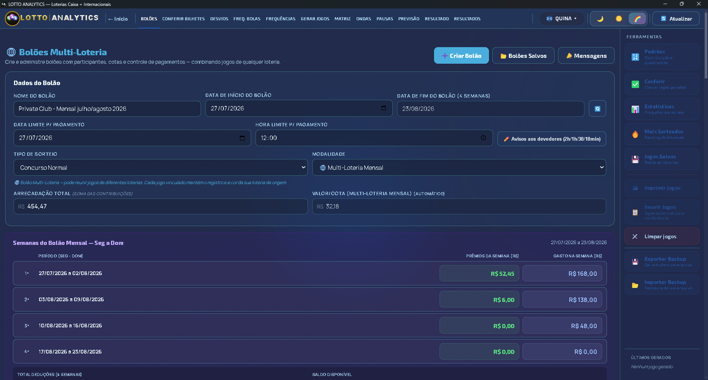
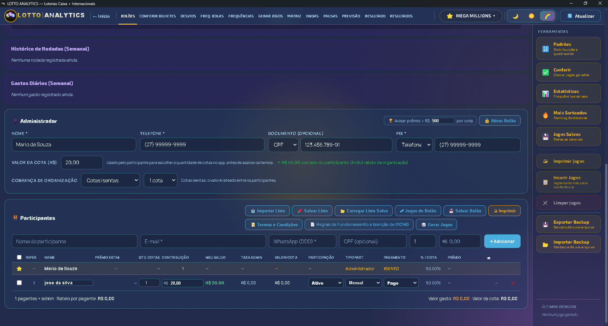
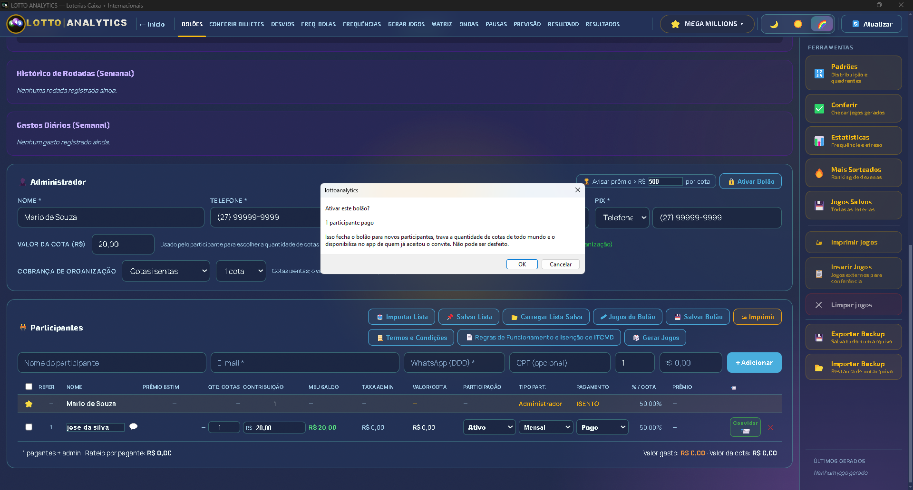
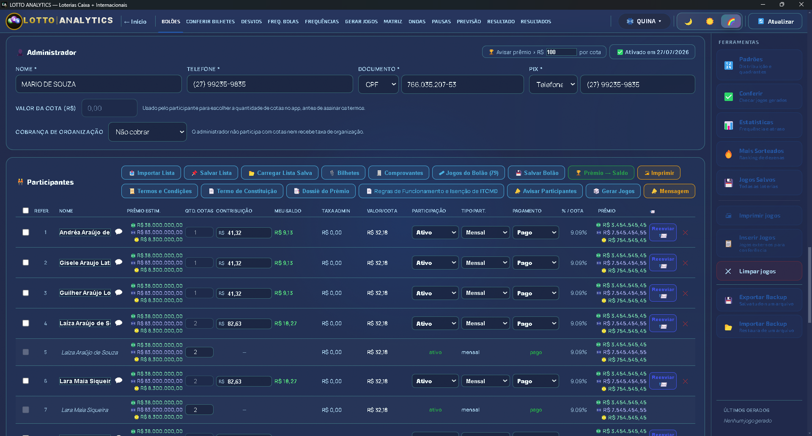
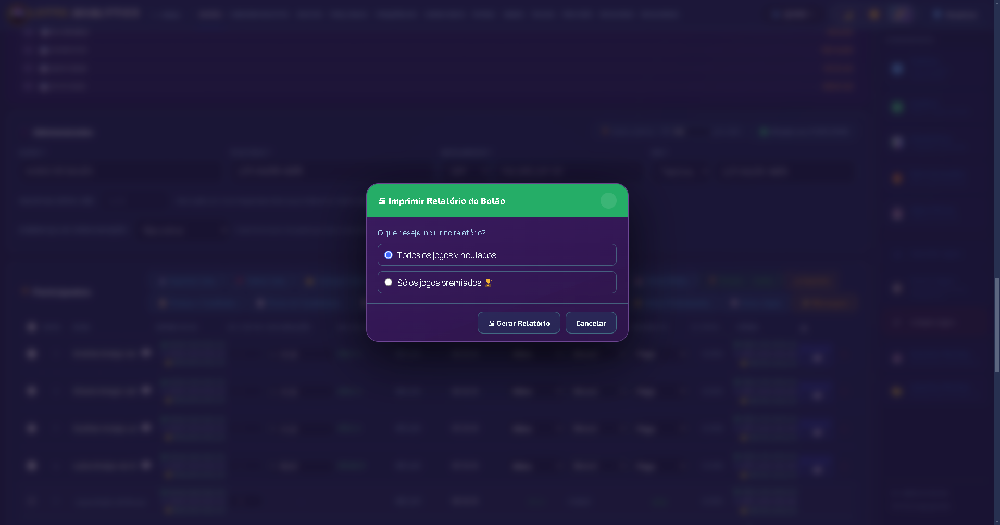
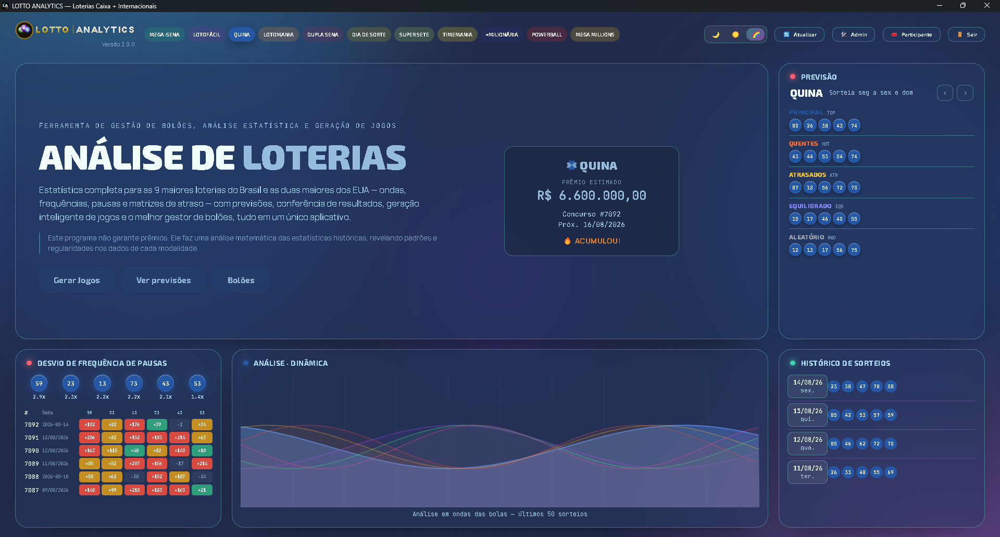
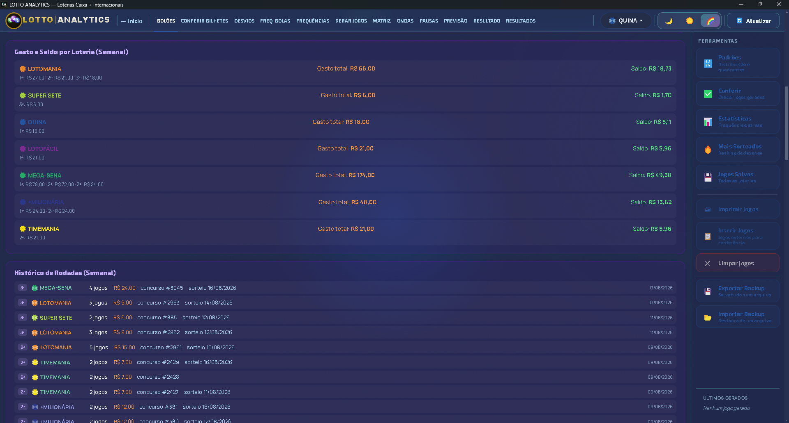

🍀 LottoAnalytics — Manual do Usuário (Desktop)
1. Visão geral
O Desktop é a ferramenta do organizador do bolão: gera jogos, cadastra participantes, controla pagamentos, ativa o bolão, imprime documentos e envia notificações.
Ele se comunica com o mesmo banco de dados do app mobile dos participantes — qualquer alteração feita aqui (pagamento confirmado, jogo vinculado, bolão ativado) aparece automaticamente no celular de quem participa, sem precisar sincronizar nada manualmente.
2. Desktop — Gestão de Bolões
2.1 Criar um bolão e adicionar participantes
- Na tela "🌐 Bolões Multi-Loteria", clique em "➕ Criar Bolão".
- Dê um nome ao bolão (a loteria só é definida depois que o primeiro jogo é gerado ou vinculado).
- Preencha os dados do administrador (nome, telefone, PIX) e adicione os participantes manualmente ou importando uma lista (Nome, E-mail, WhatsApp).
CPF/CNPJ do administrador: tem um seletor de tipo (CPF ou CNPJ), com máscara própria para cada um. Esse campo passa a ser obrigatório quando o bolão tem mais de 3 participantes — necessário para o Termo de Constituição.

Valor da cota e rateio da organização
No card Administrador, o campo "Valor da cota (R$)" define o preço de 1 cota usado no aplicativo mobile para o participante escolher quantas cotas quer, antes de assinar os termos.
Quando o bolão tem "Cobrança de organização" (cotas isentas do administrador ou valor fixo), o valor que o participante efetivamente vê e paga já vem com a fração dessa taxa somada automaticamente — dividida entre os participantes ativos — sem o organizador precisar calcular isso na mão. Sem cobrança de organização, o valor pago é exatamente o digitado nesse campo.

2.2 Semana do bolão (segunda a domingo)
Como a Caixa passou a realizar sorteios aos domingos, a semana do bolão mudou de domingo–sábado para segunda–domingo — o domingo agora fecha a semana em vez de abri-la. Isso vale tanto para o preenchimento automático de "Data início/fim da semana" quanto para o corte de semanas do bolão mensal.
2.3 Prazo de pagamento e aviso automático
Os campos "Data limite p/ pagamento" e "Hora limite p/ pagamento" definem até quando os participantes podem pagar a cota. Esse prazo acontece antes de ativar o bolão — não deve ser confundido com o encerramento do bolão em si (que é sempre o fim da semana ou do mês).
Quando esses campos são preenchidos, o sistema envia automaticamente uma notificação push para os participantes 10 minutos antes do prazo terminar. Clique em "✏️ Aviso 10min antes" para personalizar o título e o texto dessa mensagem — se deixar em branco, é usado um texto padrão.
2.4 Ativar o Bolão
O botão "🔒 Ativar Bolão" fecha o bolão para novos participantes e o disponibiliza no app dos participantes que já aceitaram o convite.

Os participantes que permanecem, com conta vinculada, recebem automaticamente uma notificação push avisando que o bolão está ativo.
2.5 Documentos: Termo de Constituição, Termos e Condições e Regras de ITCMD
Os botões "📄 Termo de Constituição" e "📜 Termos e Condições" (disponíveis após ativar o bolão) geram documentos prontos para impressão, com os dados do bolão preenchidos automaticamente — incluindo o prazo de pagamento, quando definido.
O Termo de Constituição tem duas áreas de assinatura: a coluna "Assinatura" na tabela de participantes e o bloco de linhas para assinatura física no rodapé. Quem já assinou digitalmente pelo app aparece com a imagem da assinatura e a data em ambos os lugares — não precisa assinar de novo na folha impressa.
Um terceiro link, "📄 Regras de Funcionamento e Isenção de ITCMD", fica na mesma barra de documentos. Diferente dos outros dois, é um documento institucional fixo (o mesmo para todos os bolões) que explica as regras gerais de funcionamento dos bolões e a isenção do ITCMD (Imposto de Transmissão Causa Mortis e Doação) sobre a divisão do prêmio entre os participantes.

2.6 Impressão: completa ou só premiados
Ao clicar em "🖨 Imprimir", é possível escolher entre o relatório completo (todos os jogos) ou só os jogos premiados — útil para relatórios mais curtos quando o bolão tem muitos jogos vinculados.

2.7 Notificações: prêmio grande, jogos/bilhetes e mensagens
Além do aviso de prazo de pagamento e de ativação, existem mais três tipos de notificação:
- Prêmio grande — quando o prêmio por cota de um participante passa de um valor configurável (padrão R$500), ele recebe um aviso automático. O campo "🏆 Avisar prêmio > R$___ por cota", no cabeçalho do card Administrador, permite mudar esse limite a qualquer momento.
- Jogos novos e bilhetes — o botão "📣 Avisar Participantes", na aba Participantes do bolão, manda uma única notificação cobrindo os jogos novos vinculados e os bilhetes novos anexados desde o último aviso. Não é mais preciso avisar cada um separadamente: os modais de "Jogos do Bolão" e "Bilhetes" agora só mostram um lembrete de quantos itens ainda estão pendentes, sem botão de envio próprio.
- Mensagem manual — o botão "📣 Mensagens", na tela de lista de Bolões, abre uma área independente de estar editando um bolão específico. É possível escolher enviar para um bolão específico, um participante específico (pessoa, mesmo que ele esteja em vários bolões) ou todos os participantes de todos os bolões.
Importante: essas notificações só chegam a quem já ativou notificações no app mobile.
2.8 Atualização automática do Desktop
A partir da versão 3.9, o aplicativo instalado no Windows confere automaticamente se existe uma versão nova ao abrir e depois a cada 30 minutos, enquanto estiver aberto. Ao encontrar uma, baixa em segundo plano (sem atrapalhar o uso) e mostra um aviso fixo na tela com o botão "Instalar e Reiniciar" — ao clicar, o aplicativo fecha, instala e reabre sozinho já na versão nova, sem precisar baixar nada manualmente.

2.9 Prêmio → Saldo: prêmios de baixo valor viram orçamento
O botão "🏆 Prêmio → Saldo", na barra de Participantes, converte prêmios de baixo valor já recebidos em saldo disponível para os próximos jogos, em vez de repassar o dinheiro aos participantes. Esse saldo aparece detalhado por loteria em "Gasto e Saldo por Loteria", junto com o histórico de rodadas semanais — a mesma lógica documentada nas Regras de Funcionamento e Isenção de ITCMD.

3. Perguntas frequentes
Sim, a partir da versão 3.9 — ver seção 2.8.
O prazo de pagamento é o horário até quando dá para pagar a cota — definido livremente pelo organizador e sempre antes da ativação do bolão. O encerramento do bolão em si é sempre o fim da semana (domingo) ou do mês, e não precisa ser configurado à parte.
Veja o manual próprio do app mobile: lottoanalytics-participante.netlify.app/manual.html.